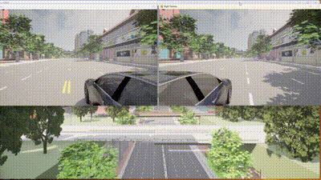

配置多视角摄像头camera.py
介绍
此脚本连接到CARLA模拟环境，在车辆的左右两侧设置相机，并使用Pygame显示相机捕获的实时图像。系统采用多进程架构，确保左右相机图像分别在不同窗口中实时显示。
pip install carla pygame numpy opencv-python
脚本结构
初始化
def __init__(self):
self.client = None
self.world = None
self.camera_left = None
self.camera_right = None
self.car = None
self.image_left = None
self.image_right = None
self.capture = True
初始化CARLA客户端、世界、车辆和相机变量。
相机设置
def setup_camera(self):
#设置相机的变换位置并附加到车辆上
#左相机
left_camera_transform = carla.Transform(carla.Location(x=-1.6, y=-1.5, z=1.7))
self.camera_left = self.world.spawn_actor(self.camera_bp(), left_camera_transform, attach_to=self.car)
#右相机
right_camera_transform = carla.Transform(carla.Location(x=-1.6, y=1.5, z=1.7))
self.camera_right = self.world.spawn_actor(self.camera_bp(), right_camera_transform, attach_to=self.car)
#监听左右相机图像
weak_self = weakref.ref(self)
self.camera_left.listen(lambda image: weak_self().set_image(weak_self, 'left', image))
self.camera_right.listen(lambda image: weak_self().set_image(weak_self, 'right', image))
在车辆的左右两侧生成相机，并设置监听器捕获相机图像。
图像处理
@staticmethod
def set_image(weak_self, side, img):
self = weak_self()
if side == 'left':
self.image_left = img
elif side == 'right':
self.image_right = img
def get_image_array(self, side):
if side == 'left' and self.image_left is not None:
array = np.frombuffer(self.image_left.raw_data, dtype=np.dtype("uint8"))
array = array.reshape((VIEW_HEIGHT, VIEW_WIDTH, 4))
array = array[:, :, :3] # Drop alpha channel
array = array[:, :, ::-1] # Convert from BGRA to RGB
return array
elif side == 'right' and self.image_right is not None:
array = np.frombuffer(self.image_right.raw_data, dtype=np.dtype("uint8"))
array = array.reshape((VIEW_HEIGHT, VIEW_WIDTH, 4))
array = array[:, :, :3] # Drop alpha channel
array = array[:, :, ::-1] # Convert from BGRA to RGB
return array
else:
return None
将相机捕获的图像从BGRA格式转换为RGB格式，并去除Alpha通道。
渲染函数
def render(queue, side, x, y):
pygame.init()
os.environ['SDL_VIDEO_WINDOW_POS'] = f"{x},{y}"
display = pygame.display.set_mode((VIEW_WIDTH, VIEW_HEIGHT), pygame.HWSURFACE | pygame.DOUBLEBUF)
pygame.display.set_caption(f'{side.capitalize()} Camera')
clock = pygame.time.Clock()
try:
while True:
array = queue.get()
if array is None:
break
surface = pygame.surfarray.make_surface(array.swapaxes(0, 1))
display.blit(surface, (0, 0))
pygame.display.flip()
for event in pygame.event.get():
if event.type == pygame.QUIT:
return
clock.tick_busy_loop(30)
finally:
pygame.quit()
使用Pygame显示左右相机捕获的图像。
多线程
为了在CARLA模拟环境中创建两个窗口来显示车辆的左右视角，我们需要利用Pygame和多进程来实现。
left_process = multiprocessing.Process(target=render, args=(left_queue, 'left', 0, 100))
right_process = multiprocessing.Process(target=render, args=(right_queue, 'right', VIEW_WIDTH + 10, 100))
